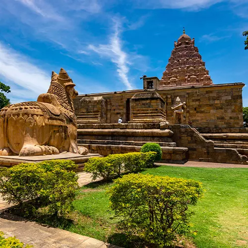
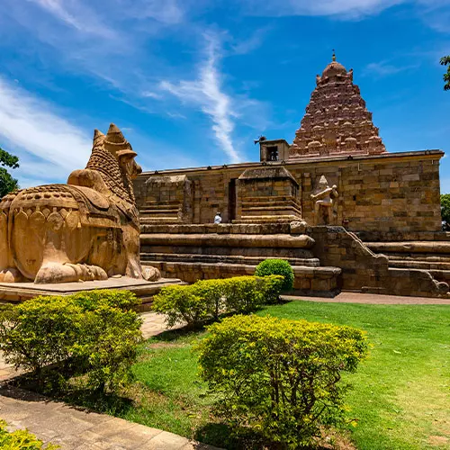
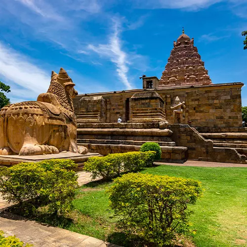
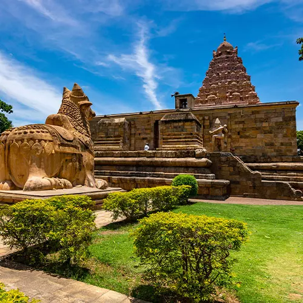

The centerpiece of Gangaikonda Cholapuram is the Brihadisvara Temple, a UNESCO World Heritage Site and a masterpiece of Chola architecture. Commissioned by King Rajendra Chola I in 1035 CE, the temple was built to commemorate his victorious expedition to the Ganges River, symbolizing the Chola dynasty's imperial power.